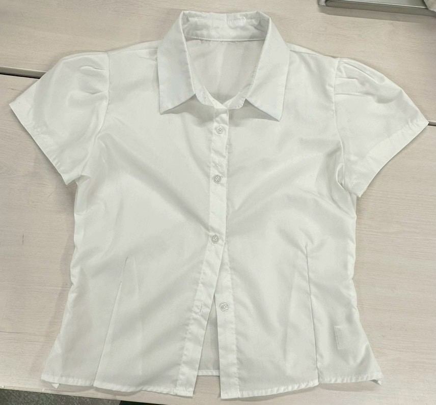
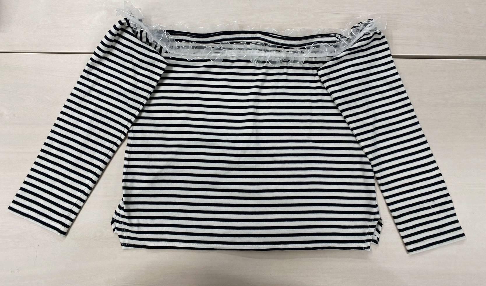

２０２５年１１月２８日
【やったこと】
- はぎれの活用方法を考える
- はぎれで小物づくり（髪ゴム・本のしおり）
はぎれの活用方法を考える
- 髪ゴム（シュシュ等）
- 本のしおり
- リップケース
- ケーブルまとめバンド
- 自転車のハンドルカバー
- ワークショップの材料（図工の授業で材料を買うのではなく、あるものでやる。）
ETC.
世の中に無いけどあったら良いものとか作れたら良い。
お気に入りの服からお気に入りの小物へ。
感性を伝えていく。いらなくなったものを価値あるものに変えていく文化を根付ける。
そして、意識改革し、日本の「もったいない精神」をより良い形で浸透させていくきっかけにする。
はぎれで小物づくり（髪ゴム・本のしおり）
【髪ゴム】

このリメイク服を作った際に出たはぎれで、髪ゴムを２つ作ることにした。
ゴムを中に通す前段階の長方形の形になるように縫い合わせた。
【本のしおり】

このリメイク服を作った際に出たはぎれで、本のしおりを作ることにした。
家にあった使ってないフェルトと合わせて、コーヒーカップ型のしおりを作っている。
コーヒーカップの形に切り取り、縫い合わせた。
（ネットで見つけたデザインを参考に作成中…。）
補足
中間発表後の振り返りとして、最終発表までに考えることをまとめておく。
はぎれを別のものにした後の循環の仕組みを考える必要がある。
リメイク服を商品化するのであれば、品質管理のタグを作成する必要がある。
マーケティングとブランディングを考える必要がある。